신랑 신부님께 직접 전하는 마음이 가장 중요하다고 생각합니다.
감동을 선사하는 안정적인 축가 축가전문 보컬 오창현
인생에서 가장 아름다운 순간, 신랑 신부님의 새로운 시작을 진심으로 축복하며 잊지 못할 감동과 행복을 선사합니다.
최고의 컨디션으로 무대를 선보이기 위해 꾸준히 목 관리와 연습에 매진합니다.
축가 전 음향과 무대 상태를 확인하고 원하는 분위기에 맞춰 준비합니다.
포트폴리오를 쌓는 단계라 시세보다 낮게 진행합니다. 부담 없이 가격 문의 주세요.
축가 진행 과정
축가 전 꼼꼼한 음향 체크와 상담을 통해 신랑신부님께서 원하는 분위기를 연출해드립니다.
실제 예식 장면
가창력을 뽐내는 무대가 아닌, 축하의 마음을 담아 예식의 전체적인 흐름과 조화를 이루는 무대를 확인해보세요.
축가 영상
예식 사진
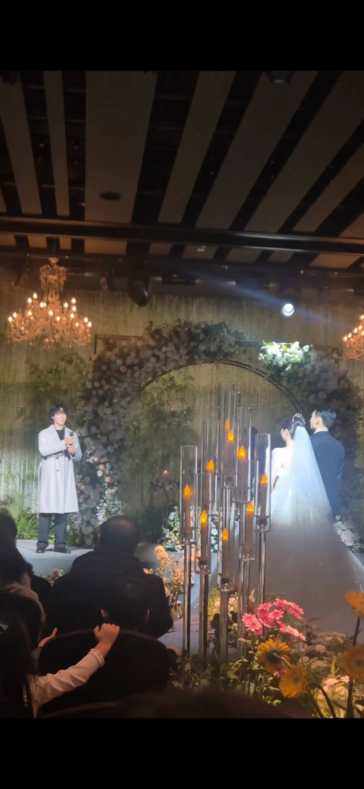
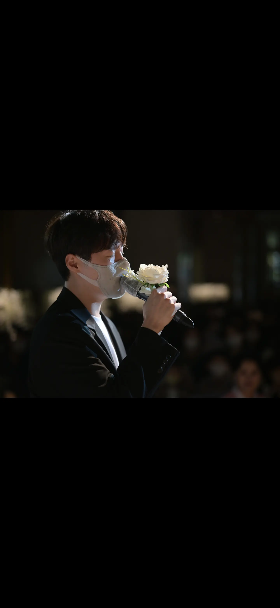
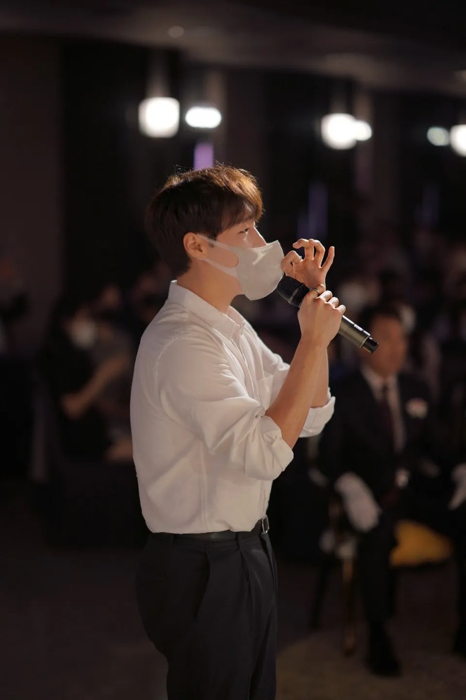
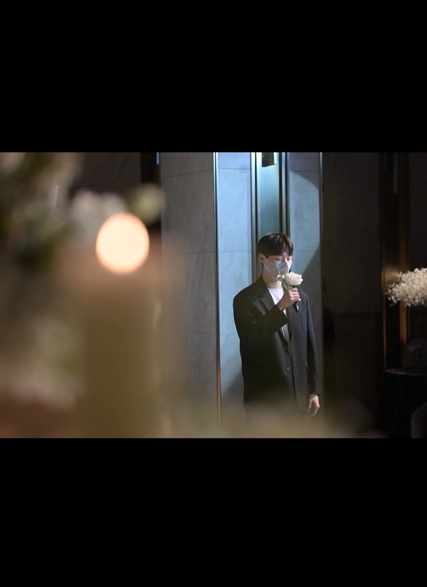
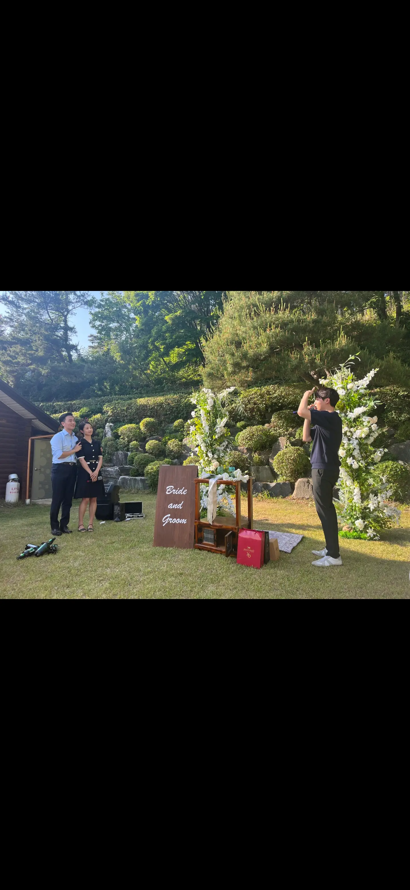
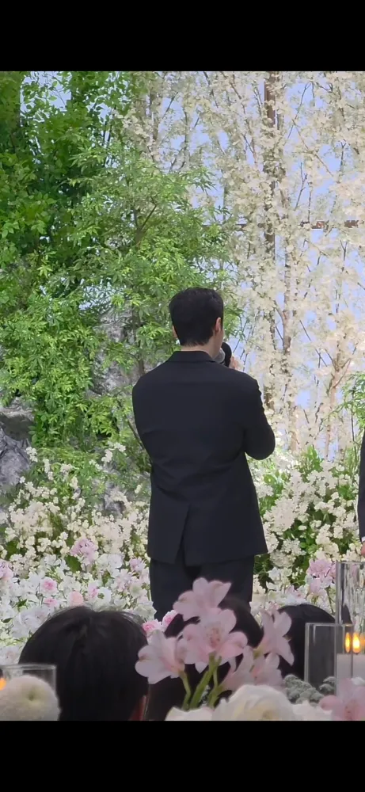
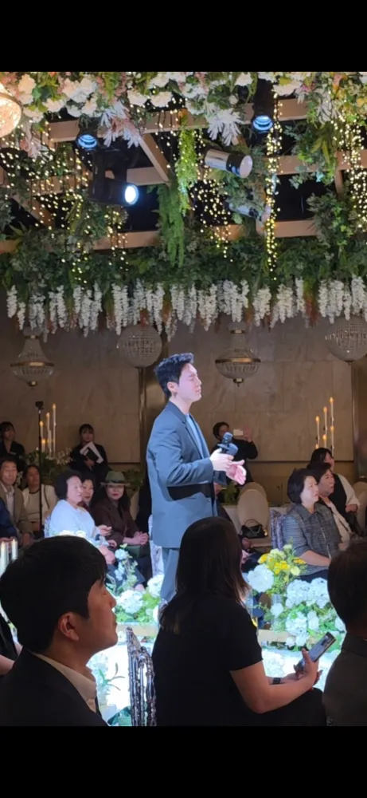
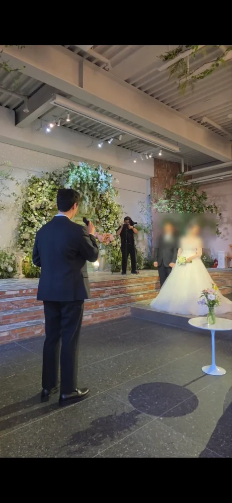
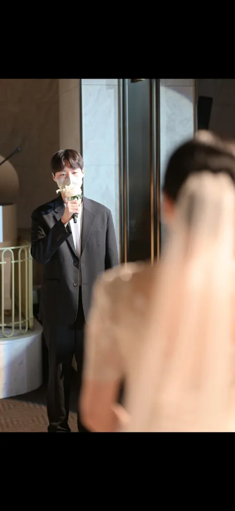
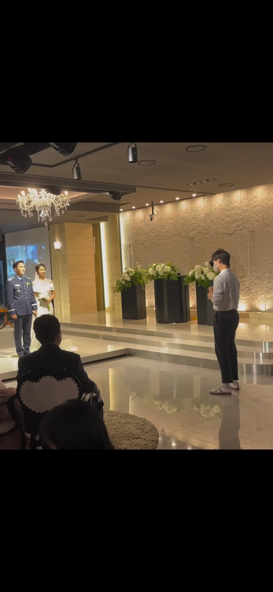
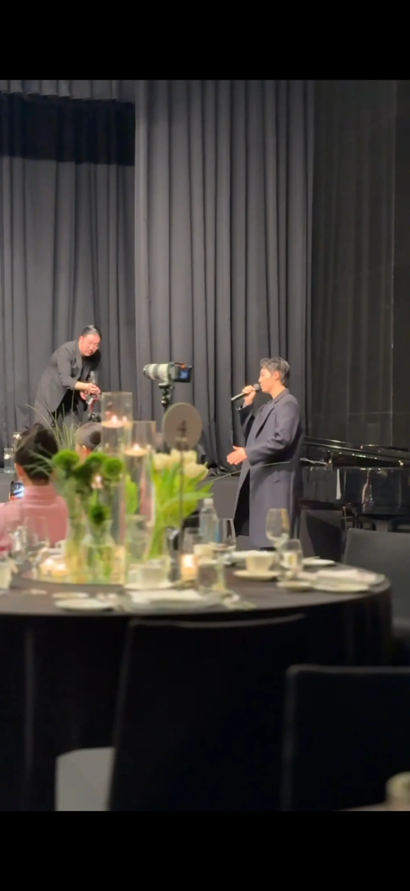
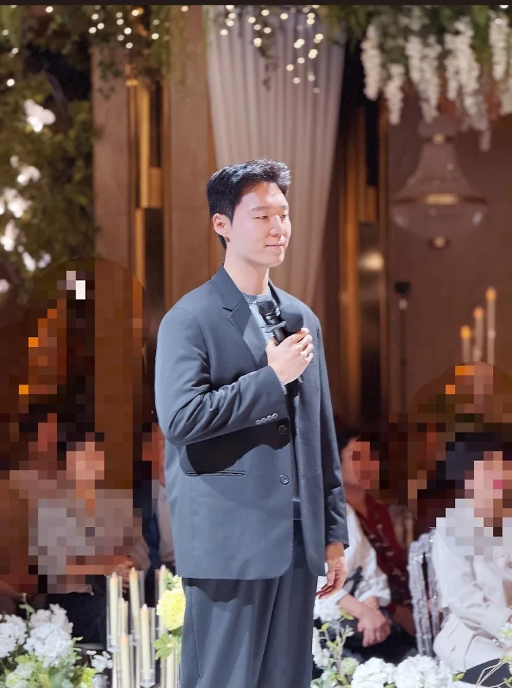
추천 축가
두 분의 사랑 이야기에 어울리는 곡을 함께 고르고, 원하는 분위기에 맞춰 준비합니다.
축가 가격 안내
아직 무대와 포트폴리오를 쌓아가는 단계라, 일반적인 축가 시세보다 부담을 낮춰 진행하고 있습니다. 축가 비용 때문에 망설이지 마시고 편하게 문의해 주세요.
한 번의 예식이라도 더 많은 무대를 경험하고 싶은 시기입니다. 그래서 일반적인 결혼식 축가 가격보다 부담을 낮춰 진행하고 있습니다.
예식 지역과 일정, 곡 수, 준비 방식에 따라 조건이 달라집니다. 정확한 축가 비용은 상담에서 솔직하게 안내드립니다.
예식 날짜와 장소만 남겨주셔도 괜찮습니다. 가격 안내를 받아보신 뒤 편하게 결정하셔도 됩니다.
후기
고객님들이 남기신 실제 후기입니다.
실제 예식 후기
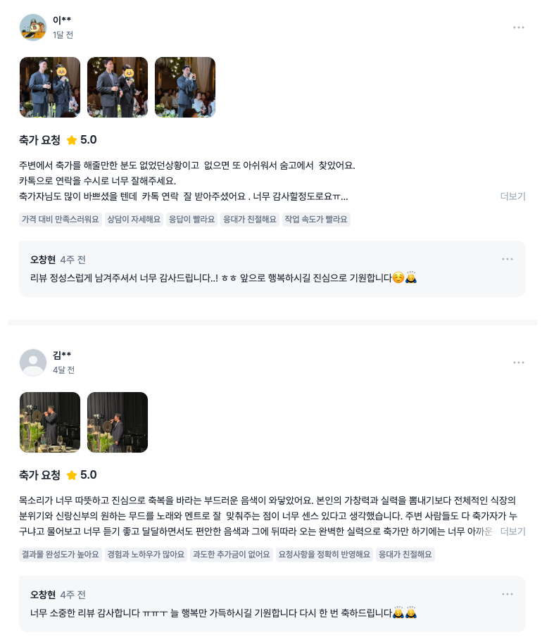
축가 문의
서울, 경기, 충청, 강원 등 넓은 지역에서 합리적인 가격으로 서비스를
제공하고 있습니다.
예식 일정과 장소를 남겨주시면 상담문의 편히 안내드리겠습니다.
외부 프로필:
FAQ
축가 섭외, 축가 문의, 축가 예약이 필요하신 예비 신랑 신부님께
오창현 축가는 축가 섭외, 축가 문의, 축가 예약 상담을 진행하는 결혼식 남자 축가 전문 보컬입니다. 예식 날짜와 장소, 원하는 분위기, 희망곡을 바탕으로 서울, 경기, 충청, 강원 등 가능한 지역과 일정에 맞춰 안내드립니다.
결혼식 축가, 웨딩 축가, 본식 축가, 예식 축가 추천곡과 선곡 상담, 예식 당일 리허설과 음향 체크까지 신랑 신부님의 소중한 순간에 어울리는 진심 어린 축가를 준비합니다.